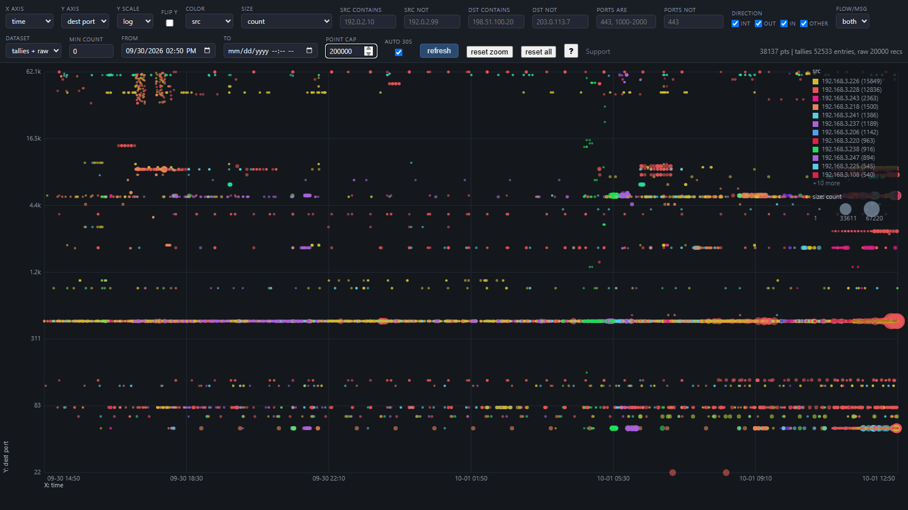
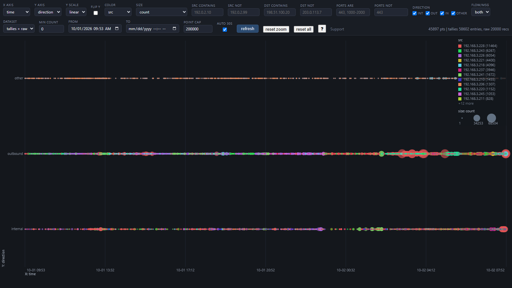
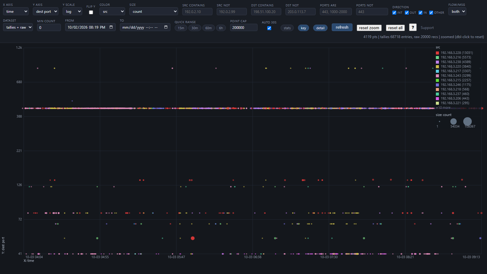
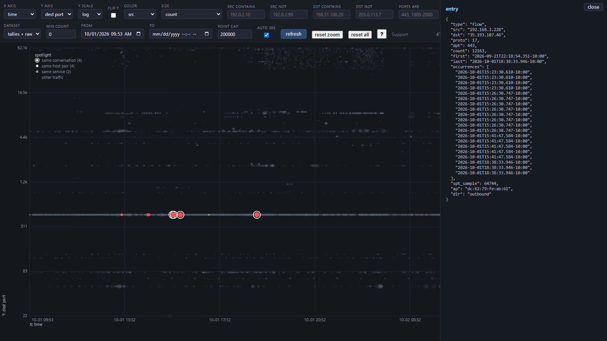

A free syslog server for Windows: a zero-dependency receiver that collects TP-Link Omada remote logging on UDP 514, condenses the firehose into per-flow tallies, and draws it as an interactive scatterplot in your browser.
Built and given away by Lucas Ballek.

The live visualizer — a full day of real traffic on a log-scaled dest-port axis, ~40k rendered points (addresses sanitized for publication).
Listens on UDP 514, splits Omada's multi-record datagrams into one line each (receive time + sender + raw payload), and keeps a 50 MB rolling raw log — newest events always survive, oldest roll off. Runs headless from boot as a per-user scheduled task.
Every record is tallied at ingestion: flows fold into src → dst/proto/port counts with first/last seen and the 20 most recent occurrence timestamps; repeated alerts fold into message templates. A week of syslog becomes a few thousand meaningful entries, with exactly-once crash recovery.
An interactive scatterplot on localhost: swappable X/Y axes, color and size encodings, log scale, RFC1918 direction slicing (internal / outbound / inbound / other), drag-to-zoom on any region, per-group aggregate sizing, pattern spotlight — click any dot to grey the noise and pop its related traffic — color-key drilldown (click a legend entry to filter to it), a scoped stats panel (unique counts + direction breakdown reflecting whatever you've spotlighted or zoomed into), smart IP filters (ranges, shorthand lists, CIDR), and built-in hover help on every control. Auto-refreshes without disturbing your view.

Traffic sliced by direction — internal vs outbound at a glance; an inbound lane appears whenever external-to-LAN flows are logged.

Drag to zoom — brush any region and dense clusters become readable; double-click or Esc zooms back out.

Pattern spotlight — click any dot to grey the noise and pop its related traffic: the same conversation (white-ringed), the same host pair, the same service.
# Windows 10/11, Python 3.8+ on PATH git clone https://github.com/Treystu/Omada-Logger-Viz.git cd Omada-Logger-Viz .\install.ps1 # one UAC prompt: firewall rule + boot task + watchdog # ER8411: System Tools > System Log > Log Settings # enable remote logging -> this PC's LAN IP, port 514 (UDP) python omada_viz.py # open http://localhost:8780
It is MIT-licensed open source: free to use, inspect, modify, and redistribute. No signup, no telemetry, no paid tier. Donations are optional and voluntary.
Yes — it listens on standard UDP 514 and accepts any RFC3164-style sender. The flow-tally condensing is tuned for Omada's log format; other devices still record fully and tally by message template.
Nowhere. Everything stays on your PC: the raw log and tallies live in your local AppData, the visualization is served on localhost only, and no data is sent to any server.
TP-Link Omada devices expose remote logging over UDP syslog only, so that is what the receiver speaks. It is Windows-only because the headless install, firewall scoping, and watchdog are built around Task Scheduler and Windows Firewall.
This is free and always will be. If it saved you a syslog-server license or a Linux VM and you want to chip in, contributions go directly to Lucas Ballek personally.
Contributions are voluntary gifts to an individual, not payment for a service, and are not tax-deductible. They buy nothing: no priority support, no warranties, no promises about future features.